GeoAI Arctic Challenge Dataset
The GeoAI Arctic Challenge dataset is an instance segmentation benchmark for detecting and delineating retrogressive thaw slumps (RTS), landscape disturbances caused by permafrost thaw, in Arctic image chips. The dataset builds on Yang et al. (2023), which provided semantic segmentation masks that label each pixel as RTS or non-RTS. For this challenge, those labels have been extended and reformatted so each RTS feature is represented as an individual instance.
Participants receive multimodal image data and train models to predict one mask for each RTS instance in the hidden test set. This instance-level formulation supports evaluation at the feature level, including how well models separate and delineate individual RTS boundaries, rather than only measuring pixel-wise foreground and background accuracy.
Training labels are provided in COCO instance segmentation format. Test labels remain hidden and are used by the official scorer.
Why it matters: RTS are sensitive indicators of permafrost thaw, which releases greenhouse gases and alters Arctic landscapes. By leveraging AI, we aim to accelerate RTS detection and improve understanding of climate-driven change.
| Satellite Image (RGB) | Semantic Mask (Original) | Instance Mask (This Challenge) |
|---|---|---|
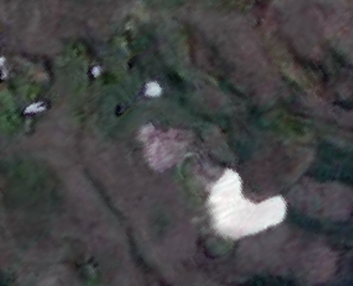 |
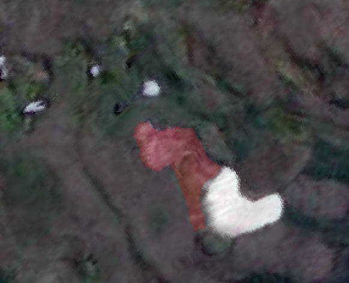 |
 |
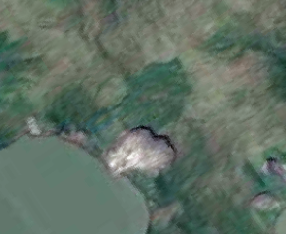 |
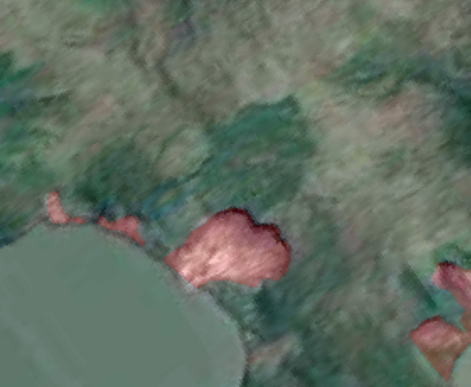 |
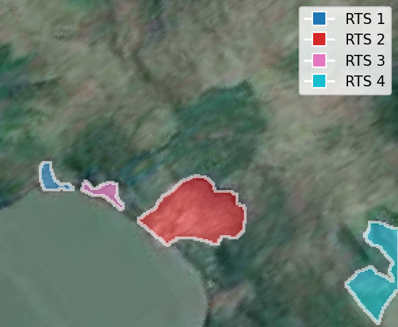 |
Figure 1. Conversion from semantic RTS labels into instance-level masks. The challenge dataset uses connected-component instance labels so models can be evaluated at the feature level rather than only pixel-wise.
Geographic Coverage & Study Sites
The source data spans 7 Arctic subregions, including:
- Canada: Herschel Island, Horton Delta, Tuktoyaktuk peninsulas, Banks Island
- Russia: Yamal and Gydan peninsulas, Lena River, Kolguev Island
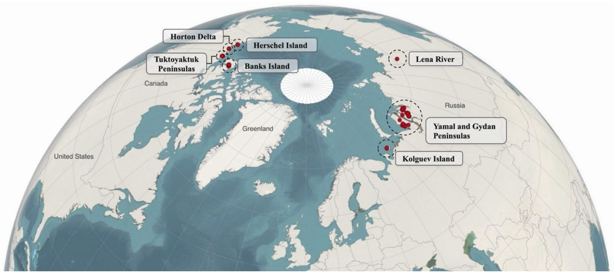
Figure 2. Spatial coverage of the source Arctic RTS dataset. The competition release removes geospatial metadata from distributed image chips while preserving multimodal image information for modeling (Li et al., 2025).
Public Release Contents
The public package contains training images and labels, hidden-label test images, metadata, and starter tools:
competition_release/
README.md
metadata/
band_names.json
sample_submission.json
train_manifest.csv
test_manifest.csv
tools/
coco_utils.py
validate_submission.py
evaluate_coco.py
inspect_dataset.py
examples/
load_image_and_label.py
make_sample_submission.py
encode_predictions.py
train/
images/*.npz
annotations/instances_train.json
test/
images/*.npzEach .npz file contains one array named image with shape H x W x 8 in HWC order.
Bands
Each image chip contains eight co-registered channels. The bands combine optical imagery, spectral features, and topographic context so models can learn both visual RTS appearance and environmental cues that affect slump boundaries.
| Data Layer | Source / Feature Type | Bands | Role in RTS Mapping |
|---|---|---|---|
| RGB imagery | Maxar optical imagery | red, green, blue |
Provides high-resolution visual context for identifying exposed soil, vegetation disturbance, and visible RTS morphology. |
| Spectral features | Vegetation, water, and near-infrared features | ndvi, ndwi, nir |
Helps models distinguish thaw-related disturbance from vegetation, water, snow, and other spectrally distinct surface conditions. |
| Terrain features | ArcticDEM-derived topographic features | relative_elevation, shaded_relief |
Adds terrain structure that can improve boundary delineation and help separate RTS features from surrounding slopes. |
The array band order is:
| Index | Band Name | Description |
|---|---|---|
| 0 | red |
Maxar red |
| 1 | green |
Maxar green |
| 2 | blue |
Maxar blue |
| 3 | ndvi |
Normalized Difference Vegetation Index |
| 4 | relative_elevation |
Relative elevation |
| 5 | shaded_relief |
Shaded relief |
| 6 | nir |
Planet near-infrared |
| 7 | ndwi |
Normalized Difference Water Index |
The same band list is available in machine-readable form in metadata/band_names.json.
Key Dataset Statistics
| Property | Description |
|---|---|
| Training Images | 756 image chips with public labels |
| Test Images | 138 image chips without public labels |
| Training RTS Instances | 1,783 |
| Hidden Test RTS Instances | 299 |
| Total RTS Instances | 2,082 train + hidden-test labels |
| Image Array Format | .npz files containing image arrays with shape H x W x 8 |
| Annotation Format | COCO instance segmentation JSON with compressed RLE masks |
| Task | RTS instance segmentation |
| Category | {"id": 1, "name": "rts", "supercategory": "landform"} |
| Original Source | Yang et al. (2023), Remote Sensing of Environment |
Label Conversion
Training annotations are stored in train/annotations/instances_train.json using COCO instance segmentation format. Instance masks are encoded as compressed COCO run-length encoding (RLE).
The label conversion rule is:
- RTS foreground: finite source
rts_labelvalues greater than0 - Background: source
rts_label == 0or missing/no-label values - Instances: 8-connected components over the binary RTS foreground
- Filtering: connected components smaller than 10 pixels are removed
This conversion is deterministic. If two RTS features touch in the source mask, connected-component labeling treats them as one instance.
Dataset Distributions
RTS Size Distribution
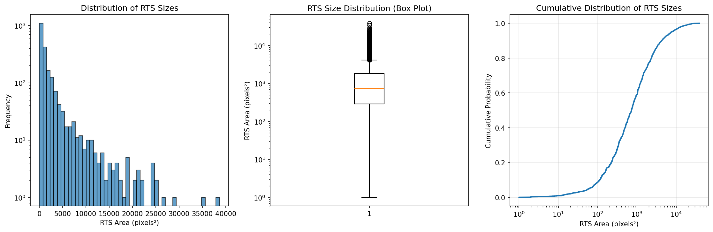
RTS Coverage Distribution
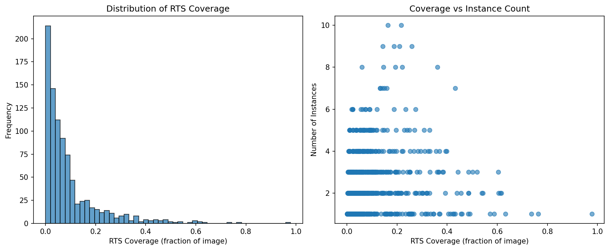
RTS Count Distribution
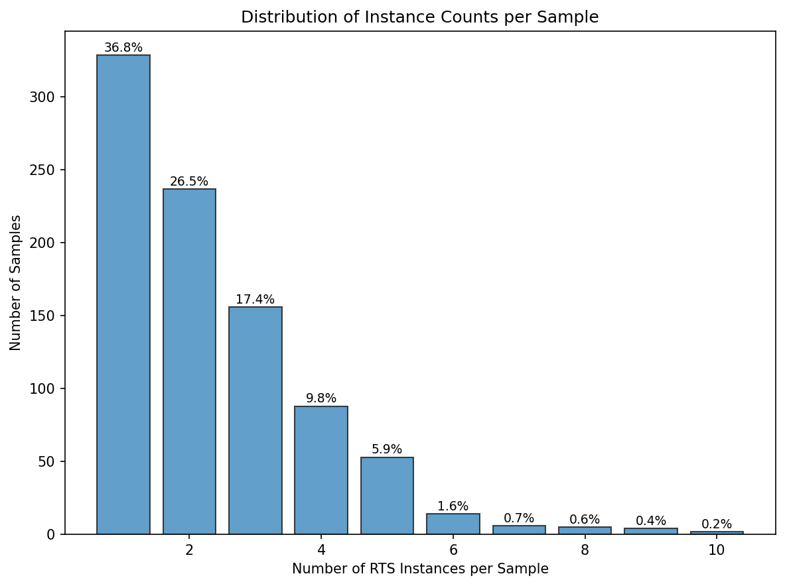
RTS Shape Analysis
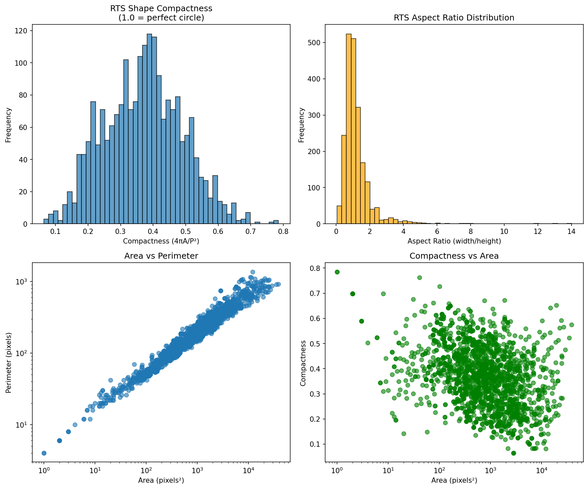
Band Statistics
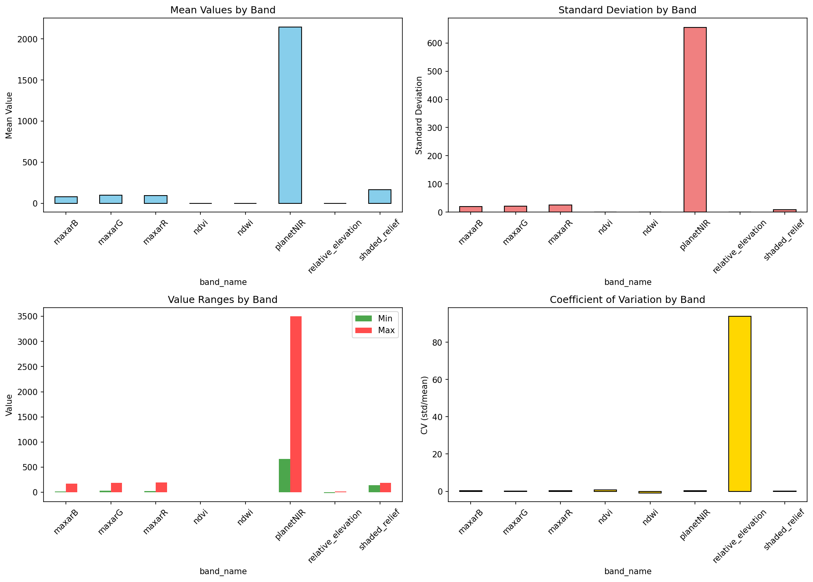
Sample Visualizations
Explore additional examples to understand data variability across regions.
| Description | Satellite Image (RGB) | Instance Mask (RTS Features) |
|---|---|---|
| Single large RTS | 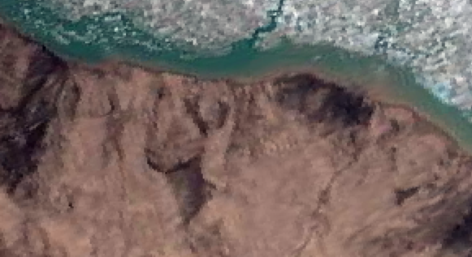 |
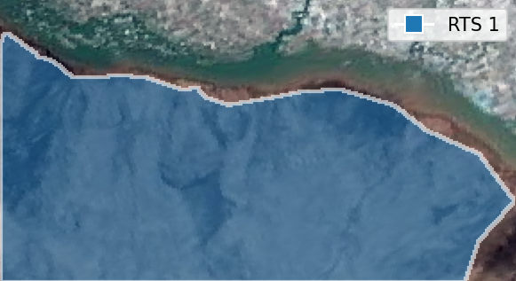 |
| Single small RTS | 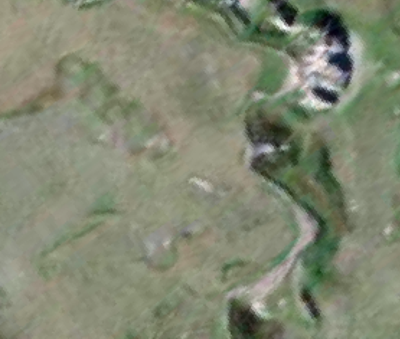 |
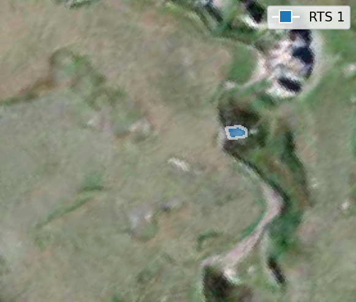 |
| Multiple RTS | 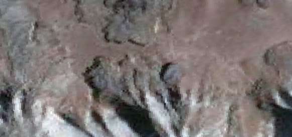 |
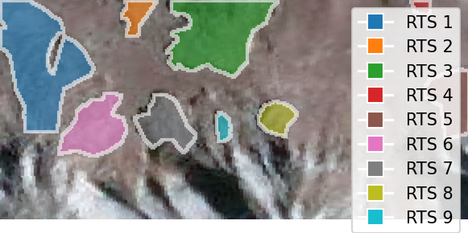 |
| RTS near snow |  |
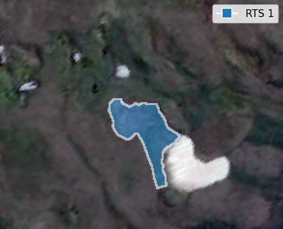 |
Figure 3. Examples of RGB imagery with RTS instance annotations. Visualizing the dataset’s variability across scales and landscapes.